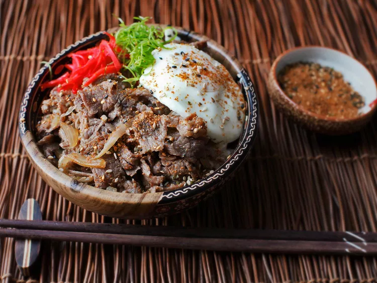

Gyudon
from Serious Eats website
Description
A Japanese Simmered Beef and Rice bowl with sake and soy sauce, this makes a quick and easy (and delicious!) meal.
Ingredients
- 1 small onion, slivered
- 1/2 cup homemade dashi or Hondashi
- 1/4 cup dry sake
- 2 tbs soy sauce
- 1 tbs sugar
- 1/2 lb thinly shaved beef ribeye or chuck steak
- 1 tsp grated fresh ginger
- 2 cups cooked white rice
- 2 large poached eggs (optional)
- Sliced scallions
- Beni-shoga
- Togarashi
Steps
- Combine onion, dashi, sake, soy sauce, and sugar in a medium saucepan or saucier and bring to a simmer over medium heat. Cook, stirring occasionally, until onion is softened, about 5 minutes.
- Add beef and cook, stirring until beef is cooked through and liquid has reduced down to an intensely flavored broth, about 5 minutes. Stir in ginger and simmer for 1 minute longer. Adjust seasoning with salt and sugar to taste.
- Divide rice between 2 to 3 bowls and top with beef and sauce mixture. Garnish each bowl with a poached egg (if using), sliced scallions, beni-shoga, and togarashi. Serve immediately.